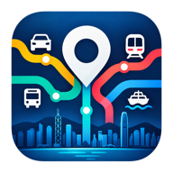

目前離線 / You’re offline
請重新連接網絡，查看最新交通資訊、快拍及地圖。
Reconnect to the internet to load the map, traffic snapshots and current traffic information.
重試 / Try again
請重新連接網絡，查看最新交通資訊、快拍及地圖。
Reconnect to the internet to load the map, traffic snapshots and current traffic information.
重試 / Try again